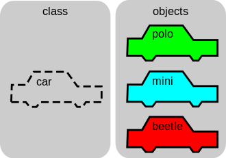
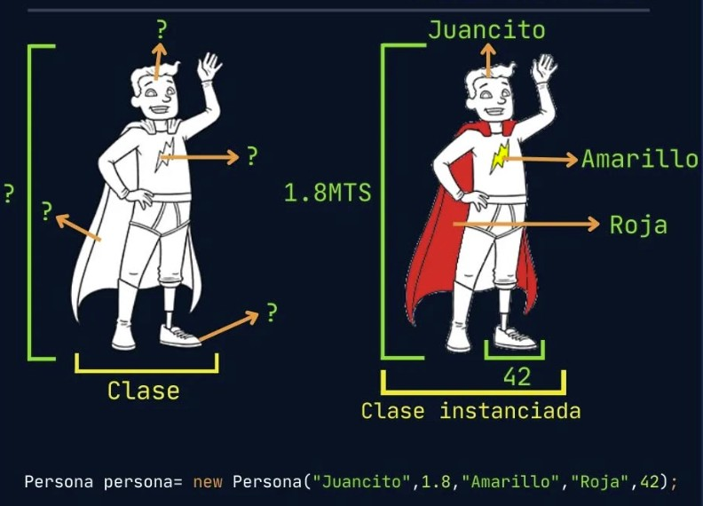

UT4 · Introducción a la definición de clases
¿Qué es una clase?
Tal y como se vio en el tema anterior, una clase es una plantilla que define el estado (atributos) y el comportamiento (métodos) de los objetos que se crearán a partir de ella. Permite modelar entidades del dominio de forma modular y reusable.

public class Car {
String brand; // atributo (estado)
int speed; // atributo (estado)
void accelerate(int increment) { // método (comportamiento)
speed += increment;
}
}Convenciones de nomenclatura
En la anterior clase vimos como crear un objeto a partir de una clase, pero no se hizo mención a las convenciones de nomenclatura.
Es importante seguir estas convenciones para mejorar la legibilidad y mantenibilidad del código.
En Java, por ejemplo, se recomienda usar:
- Clases: Nombres en mayúscula (PascalCase), como
CuentaBancaria. - Métodos y variables: Nombres en minúscula con mayúscula para separar palabras
(camelCase), como
ingresarMonto. - Constantes: Nombres en mayúscula con guiones bajos, como
COMISION_ANUAL.
public class CuentaBancaria { // PascalCase para clases
// Mayúsculas con guiones bajos para constantes
private static final double COMISION_ANUAL = 12.50;
// camelCase para variables
private String titular;
private double saldo;
// camelCase para métodos
public void ingresarMonto(double cantidad) {
saldo += cantidad;
}
}Qué son las propiedades (atributos)
Las propiedades almacenan el estado del objeto. Pueden ser tipos primitivos u otros objetos, y suelen declararse privadas para proteger la integridad del estado.
public class Libro {
private String titulo;
private String autor;
private int anio;
}Tipos de métodos y sus usos
Los métodos definen el comportamiento del objeto. Pueden ser:
- Getters/Setters: para acceder y modificar propiedades privadas.
- Acciones: que realizan operaciones o cálculos basados en el estado.
- Constructores: para inicializar objetos al crearlos.
public class Persona {
private String nombre;
private int edad;
// Constructor
public Persona(String nombre, int edad) {
this.nombre = nombre;
this.edad = edad;
}
// Getter/Setter
public String getNombre() { return nombre; }
public void setNombre(String n) { this.nombre = n; }
// Acción
public boolean esMayorDeEdad() { return edad >= 18; }
}Encapsulamiento: visibilidad de propiedades y métodos

El encapsulamiento oculta detalles internos y expone una interfaz controlada. Reduce errores, acoplamiento y facilita cambios.
public class Cuenta {
private double saldo;
public void ingresar(double cantidad) {
if (cantidad > 0) saldo += cantidad;
}
public boolean retirar(double cantidad) {
if (cantidad > 0 && cantidad <= saldo) { saldo -= cantidad; return true; }
return false;
}
public double getSaldo() { return saldo; }
}Propósito del constructor
Un constructor inicializa el estado del objeto en el momento de su creación. No tiene tipo de retorno y su nombre coincide con la clase.

public class Persona {
// Atributos: nombre, altura, colorEmblema, colorCapa, tallaPie
public Persona(String nombre, double altura, String colorEmblema, String colorCapa, int tallaPie) {
// Inicialización de atributos
this.nombre = nombre;
this.altura = altura;
this.colorEmblema = colorEmblema;
this.colorCapa = colorCapa;
this.tallaPie = tallaPie;
}
}Sobrecarga de constructores
La sobrecarga permite varios constructores con diferentes parámetros para flexibilidad en la inicialización.
public class Punto {
int x, y;
public Punto() { this(0, 0); } // por defecto
public Punto(int x) { this(x, 0); } // solo x
public Punto(int x, int y) { this.x = x; this.y = y; } // completo
}Invocación de constructores desde otras clases
Los constructores se invocan con new. Si hay sobrecarga, el compilador elige el adecuado según los argumentos.
public class App {
public static void main(String[] args) {
Punto p1 = new Punto(); // (0,0)
Punto p2 = new Punto(5); // (5,0)
Punto p3 = new Punto(5, 7); // (5,7)
}
}Qué es un método estático
Un método estático pertenece a la clase, no a la instancia; se invoca sin crear objetos y no accede a estado de instancia.
class Mat {
public static int cuadrado(int n) { return n * n; }
}
int r = Mat.cuadrado(5);Diferencias con métodos de instancia
Los métodos de instancia operan sobre el estado del objeto (this), los
estáticos no.
class Circulo {
double radio;
public double area() { return Math.PI * radio * radio; } // instancia
public static double cmAPulgadas(double cm) { return cm / 2.54; } // estático
}¿Qué es una interfaz?
Una interfaz define un contrato (conjunto de métodos) que las clases se comprometen a implementar. Favorece polimorfismo y desacoplamiento.
//Creación de la interfaz
interface Imprimible {
void imprimir();
}
//Implementación de la interfaz en una clase
class Factura implements Imprimible {
// Obligación de implementar el método definido en la interfaz
public void imprimir() {
System.out.println("Imprimiendo factura...");
}
}